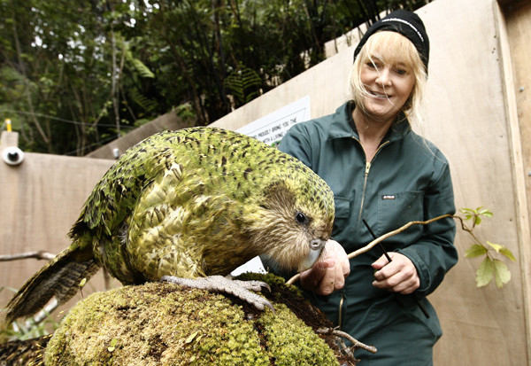
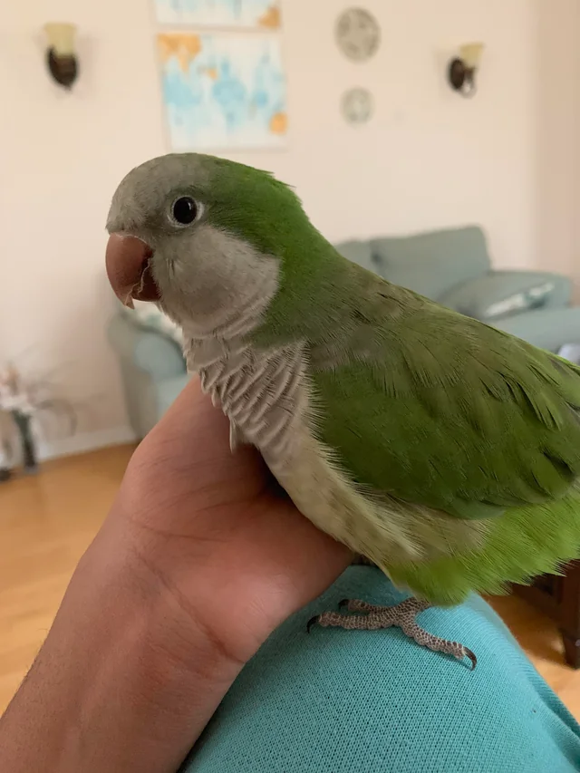

🦠Welcoming Our Newest Resident: The Tokay Gecko! 🌿
Updated at: 20.02.2024
Exciting news from Birbberry! We're thrilled to introduce our latest addition: the vibrant and charismatic Tokay Gecko! Originating from
Southeast Asia, this gecko species boasts striking colors and a unique set of features that make it a captivating addition to our sanctuary.
Meet the Tokay Gecko:
🌈 Vibrant Appearance: Adorned with spots ranging from blue-gray to red-orange, the Tokay Gecko is a sight to behold!
🔊 Distinctive Vocalizations: Known for its loud and distinctive calls, the Tokay Gecko's vocal prowess adds a special charm to our shelter.
Caring for Our Tokay Gecko:
ğŸ Optimal Habitat: Our gecko's enclosure is carefully designed to mimic its natural habitat, complete with hiding spots and climbing
branches.
🍴 Nutritious Diet: With a menu of crickets, mealworms, and other insects, our Tokay Gecko enjoys a balanced diet supplemented with
essential nutrients.
🌡️ Proper Environment: Maintaining ideal temperature and lighting ensures our gecko's health and well-being.
🦜 Welcoming the Charismatic Kakapo Parrot to Our Sanctuary! 🌿
Updated at: 03.01.2024

Nestled within the lush forests of New Zealand, a unique avian marvel thrives, captivating the hearts of those fortunate enough to encounter
it—the Kakapo Parrot. Join us as we delve into the fascinating world of this rare and charismatic bird, recently welcomed into our sanctuary
at Birbberry. Keeping Up with Kakapo:
🏝️ Island Living: Our Kakapo Parrot enjoys the laid-back lifestyle of its native New Zealand, where it can strut its stuff and entertain the
masses.
🍐 Gourmet Taste: When it comes to cuisine, this parrot is a connoisseur of fine delicacies, with a particular fondness for native fruits
like the delicious rimu berries.
🌧️ Rainy Day Fun: Rainy weather? No problem! Our Kakapo Parrot thrives in the wet weather, proving that laughter is the best medicine—even
during a downpour!
🦜 Welcoming Our Newest Resident: The Monk Parakeet! 🌿
Updated at: 19.12.2023

Exciting news from Birbberry! We're thrilled to introduce our vibrant new addition, the Monk Parakeet, also known as the Quaker Parrot!
Originating from South America, this charming bird brings color and character to our sanctuary. 🌈 Meet the Monk Parakeet:
🡠Adaptable Habitat: Our Quaker Parrot will enjoy a spacious aviary filled with perches and toys.
ğŸ Gourmet Palate: From fresh fruits to seeds, we ensure our bird's diet is nutritious and varied.
🤠Social Butterfly: With its sociable nature, our Monk Parakeet enjoys interaction with both birds and humans alike.